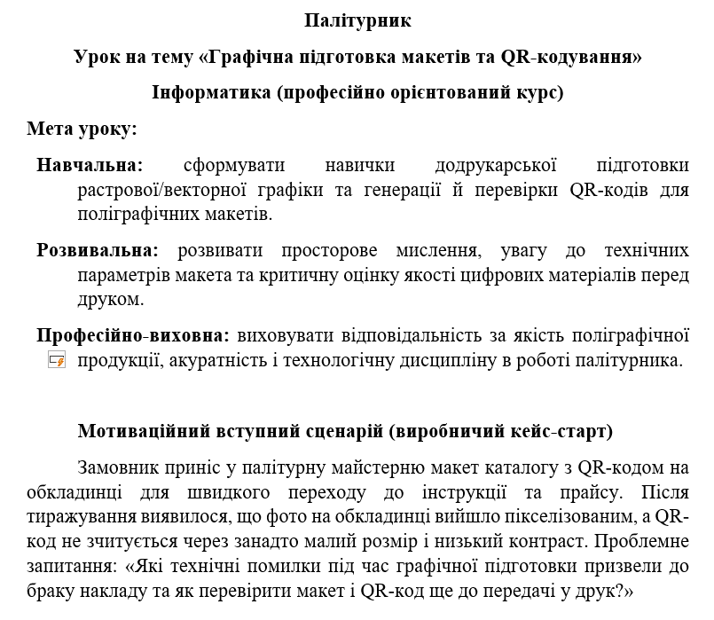
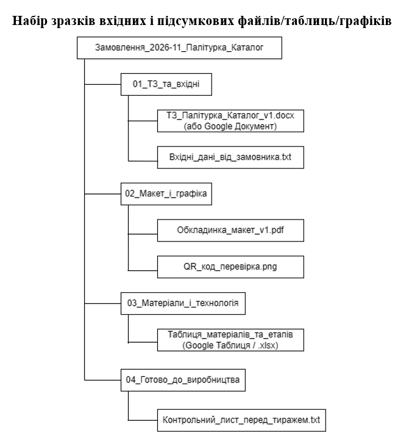
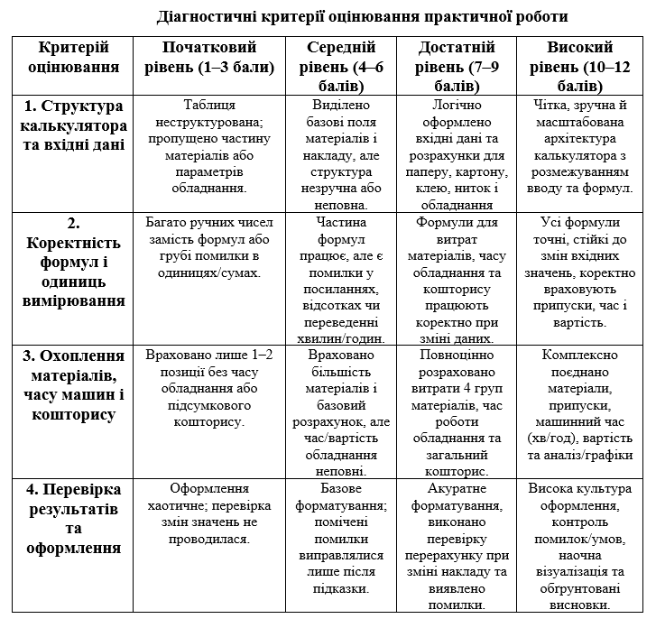
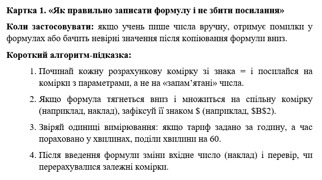
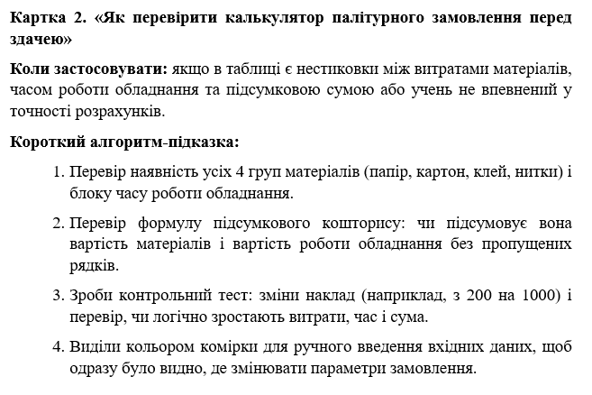

Інтерактивні вправи
«Знайди додрукарський брак у макеті»
Платформа: LearningApps.
Дидактична мета: закріпити вміння розпізнавати типові помилки підготовки макета (RGB замість CMYK, 72 dpi замість 300 dpi, відсутність вильотів під обріз).
Посилання на вправу«Налаштуй QR-код для обкладинки»
Платформа: Wordwall.
Дидактична мета: відпрацювати правила вибору рівня корекції помилок, контрастності, розміру та «тихої зони» навколо QR-коду на палітурних виробах.
Посилання на вправуПроєкт практичної частини уроку
Посилання на документЗразок


Картки для подолання освітніх втрат (з короткими алгоритмами-підказками)


Аналітична довідка з проблеми наступності
1. Різний рівень базової підготовки та фрагментарність шкільних знань
У ЗЗСО учні вивчають інформатику з різною інтенсивністю та глибиною залежно від матеріальної бази школи, кадрового забезпечення й обраного профілю. Частина вступників має базові навички роботи з офісними пакетами та пошуком інформації, тоді як інші не володіють навіть системною файловою навігацією, базовим форматуванням документів чи основами табличних обчислень. У результаті майстрам і викладачам ЗП(ПТ)О доводиться витрачати перші тижні професійного навчання на вирівнювання стартового рівня замість одразу переходити до виробничих завдань.
2. Розрив між загальноосвітньою та професійно-орієнтованою тематикою
Шкільний курс інформатики переважно орієнтований на загальнокультурні та базові алгоритмічні/цифрові компетентності, тоді як професія оператора з обробки інформації та програмного забезпечення вимагає практичної точності, роботи з великими масивами даних, типовими бізнес-документами, базами даних, основами адміністрування та дотримання регламентів обробки інформації. Учні часто сприймають ІТ у школі як набір ізольованих шкільних вправ, а не як інструмент щоденної професійної діяльності з чіткими вимогами до якості та швидкості виконання.
3. Невідповідність програмного забезпечення та технічного середовища
У ЗЗСО часто застосовують обмежений або неоднорідний набір програмних засобів і хмарних сервісів, тоді як у ЗП(ПТ)О професійне навчання потребує роботи з конкретними прикладними програмами, офісними стандартами, системами керування базами даних, засобами резервного копіювання та безпечної роботи з даними, наближеними до умов роботодавців. Через це першокурсники стикаються з когнітивним перевантаженням при зміні інтерфейсів, форматів файлів і робочих інструментів.
4. Несформованість навичок інформаційної безпеки та професійної відповідальності
У шкільній практиці питання кібергігієни, захисту персональних і службових даних, авторського права та ліцензійної чистоти ПЗ часто розглядаються поверхово. У професійній діяльності оператора обробки інформації помилка щодо конфіденційності, втрати даних або використання неліцензійного ПЗ несе прямі фінансові й правові ризики для підприємства. Відсутність сформованої звички до перевірки достовірності даних, резервування та дотримання політик безпеки ускладнює адаптацію здобувачів освіти до виробничих стандартів.
Методичні кроки викладача
1. Вхідне діагностичне експрес-тестування з практичним скринінгом
Суть кроку: На першому занятті проводиться коротке комплексне оцінювання (15–20 хвилин), яке поєднує 8–10 тестових запитань і 2–3 мікрозавдання (створення структури папок, базове форматування тексту, проста формула в електронній таблиці). Ефект: Дає змогу швидко виявити реальний стартовий рівень кожного здобувача освіти, уникнути дублювання вже засвоєного матеріалу для сильних учнів і вчасно зафіксувати прогалини у слабших.
2. Використання пропедевтичних інтерактивних вправ у форматі «мікрокейсів»
Суть кроку: На початку вивчення професійно-орієнтованих тем викладач впроваджує короткі 5–7-хвилинні тренажери або інтерактивні завдання (наприклад, на платформах LearningApps, Wordwall або у власних вебтренажерах), які пов’язують шкільні поняття з виробничими завданнями (від шкільної таблиці оцінок - до прайс-листа чи накладної). Методичний ефект: Знімає психологічний бар’єр перед складним професійним програмним забезпеченням і формує розуміння прикладного призначення ІТ.
3. Впровадження індивідуальних корекційних карток (маршрутів вирівнювання)
Суть кроку: Для учнів, які за результатами вхідного діагностування показали низький рівень володіння базовими операціями, викладач надає структуровані корекційні картки-пам’ятки з покроковим алгоритмом дій, прикладами гарячих клавіш і типовими помилками (наприклад, «Базова робота з файловою системою», «Типове форматування ділового документа»). Методичний ефект: Дозволяє організувати диференційовану підтримку без затримки темпу навчання всієї групи та поступово вивести всіх здобувачів освіти на єдиний базовий рівень.